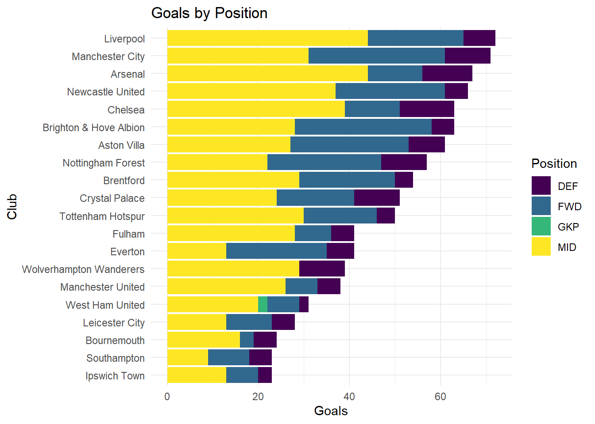
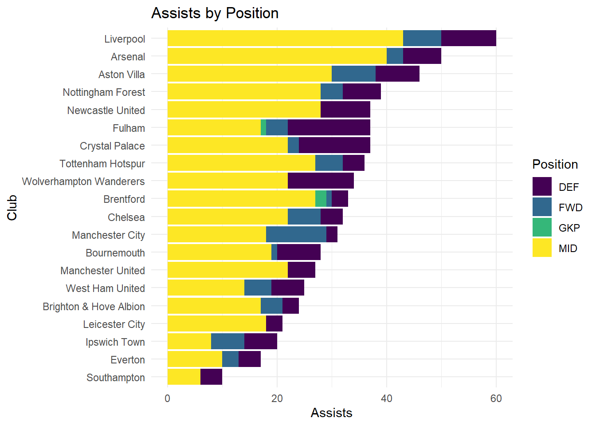
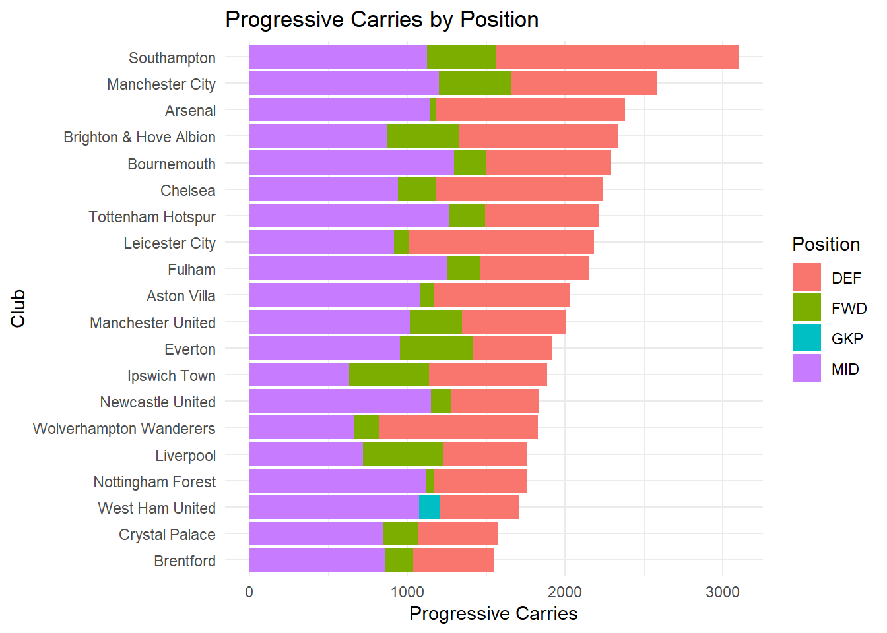
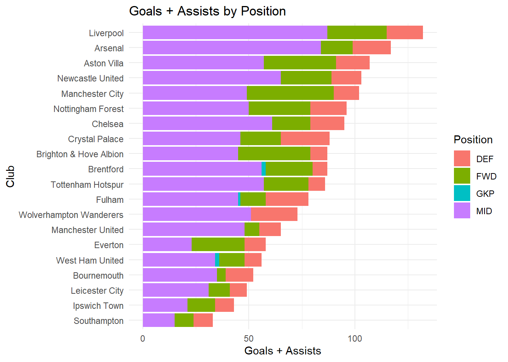

library(tidyverse)
library(here)
prem_data <- read.csv(here('docs/posts/0207_blog/data/epl_player_stats_24_25.csv'))
## Data cleaning to correct an error with players Clubs
prem_data <- prem_data |> mutate(Club = fct_recode(Club, "Brighton & Hove Albion" = "Brighton"))Hello and Welcome to my first Data Visualization Blog. I would like to thank you for your interest and hope you stick around to see where this blog will go.
Today’s Topic: 2024/2025 Premier League Season Statistics
Today we will be looking into player statistics from the 2024/2025 Premier League season. The Premier league is the top soccer league in the UK featuring 20 teams and some very talented soccer players. Our data set comes from the Score Sports Data Repository which features a number of sports data sets available for anybody to use. There is also learning materials provided for different data sets with different levels of difficulty.
## Example of what an instance looks like for a player
prem_data |> slice(1:2) Player.Name Club Nationality Position Appearances Minutes Goals Assists
1 Ben White Arsenal England DEF 17 1198 0 2
2 Bukayo Saka Arsenal England MID 25 1735 6 10
Shots Shots.On.Target Conversion.. Big.Chances.Missed Hit.Woodwork Offsides
1 9 12 13% 0 0 1
2 67 2 25% 8 0 7
Touches Passes Successful.Passes Passes. Crosses Successful.Crosses Crosses..
1 833 1678 1493 89% 51 10 20%
2 1094 643 556 87% 1 0 0%
fThird.Passes Successful.fThird.Passes fThird.Passes.. Through.Balls Carries
1 714 592 83% 4 583
2 55 33 60% 1 167
Progressive.Carries Carries.Ended.with.Goal Carries.Ended.with.Assist
1 296 0 0
2 69 0 0
Carries.Ended.with.Shot Carries.Ended.with.Chance Possession.Won Dispossessed
1 5 17 107 6
2 1 0 44 40
Clean.Sheets Clearances Interceptions Blocks Tackles Ground.Duels gDuels.Won
1 5 38 23 6 20 231 116
2 2 6 15 14 29 58 34
gDuels.. Aerial.Duels aDuels.Won aDuels.. Goals.Conceded xGoT.Conceded
1 50% 16 5 31% 0 0
2 59% 45 23 51% 0 0
Own.Goals Fouls Yellow.Cards Red.Cards Saves Saves.. Penalties.Saved
1 0 10 2 0 0 0% 0
2 0 15 3 0 0 0% 0
Clearances.Off.Line Punches High.Claims Goals.Prevented
1 0 0 0 0
2 0 0 0 0The data is already in a clean format, so we don’t have to used tidyr to manipulate it.
This data set has 562 rows and 57 columns, and each row represents the statistics for a player for the 2024/25 season. Each row has information like player name, club, nationality, position, and statistics about their time played and different performance metrics. There are attacking, defending, conduct, goalkeeping, and playing time. More information about each individual variable available can be found on it data repository page.
The question we are hoping to answer today is what teams are the most well rounded when scoring/attacking? Teams/Fans expect their highly paid forwards to score, but which teams also get production from their midfielders, or even defenders. Teams have a strong financial incentive to succeed in the Premier league and avoid relegation, so if they can get goal contributions from defensive players and midfielders as well as attackers, they could have a boost in their finishing position.
To answer this question we will look at Goals, Assists, Shots, and Progressive Carries, using these statistics to see which teams have offensive contributions from their defensive players.
Goals: Number of goals scored by a player Assists: Number of goals assisted by a player Shots: Number of shots by a player Progressive Carries: Number of carries where the player progressed significantly with the ball
attacking_data <- prem_data |> select(Player.Name, Position, Club, Goals,
Assists, Shots, Progressive.Carries)goal_plot <- attacking_data |> group_by(Position, Club) |>
summarise(Goals = sum(Goals)) |>
ungroup() |>
group_by(Club) |>
mutate(tot_goals = sum(Goals)) |>
arrange(desc(tot_goals))
ggplot(data = goal_plot, aes(x = fct_reorder(Club, tot_goals),
y = Goals, fill = Position)) +
geom_col() +
coord_flip() +
theme_minimal() +
labs(x = "Club", title = "Goals by Position") +
scale_fill_viridis_d()
In this plot the goal scoring totals almost mirror the final table, with Liverpool on top and teams like Man City, Arsenal, Chelsea, and Newcastle United close behind. Some interesting teams are Tottenham Hotspur who finished 17th, yet were in the middle of the scoring totals, and Bournemouth, who finished 9th and are 18th in scoring total. When it comes to scoring from different positions, we can see that the League winners and scoring leaders Liverpool get significant contributions from their Midfield, and less from their attackers, while 3rd place Manchester City rely heavily on Forwards. My team, Nottingham Forest relied heavily on their Striker, shown clearly by having the lowest Midfield scoring total relative to their companions on the list. Chelsea is also interesting, as they get more goals from defense then most, and have very few goals from the Forwards. Everton, like Man City relies heavily on the Attackers, and has close to the least goals from their Midfield. Next we will look at Assists, and see which positions are the best at creating goals for their teammates.
assist_plot <- attacking_data |>
group_by(Position, Club) |>
summarise(Assists = sum(Assists)) |>
ungroup() |>
group_by(Club) |>
mutate(tot_assists = sum(Assists))
ggplot(data = assist_plot, aes(x = fct_reorder(Club, tot_assists),
y = Assists, fill = Position)) +
geom_col() +
coord_flip() +
theme_minimal() +
labs(x = "Club", title = "Assists by Position") +
scale_fill_viridis_d()
From this plot, we can see that Liverpool midfielders are very good at creating chances for their teammates, having the most assists as well. The defenders also have a good chunk of assists, showing that having a versatile team when it comes to creating chances is important. Arsenal also has a strong midfield core, as do other Nottingham Forest, and Aston Villa. Newcastle interestingly cannot rely on their Attackers to create chances for others, which cannot be reliable at this level. Fulham has the best distribution between postions, with strong defenders and a goalkeeper assist. Man City, and Brighton are the interesting outliers here, as the drop from to 5 goal scorers to bottom half assisting teams, with lackluster totals from the midfield and other positions. Next we will look at what positions on the field generate the most shots for each team.
shots_plot <- attacking_data |>
group_by(Position, Club) |>
summarise(Shots = sum(Shots)) |>
ungroup() |>
group_by(Club) |>
mutate(shots_tot = sum(Shots))
ggplot(data = shots_plot, aes(x = fct_reorder(Club, shots_tot),
y = Shots, fill = Position)) +
geom_col() +
coord_flip() +
theme_minimal() +
labs(x = "Club", title = "Shots by Position") +
scale_fill_viridis_d()
This plot shows that more shots tend to generate more goals, as we see teams that top the goal chart again. Man City and Liverpool have the same balance of Midfield vs Forward, with each leaning on what appears to be their strengths. Bournemouth is very interesting here as they go from bottom 3 scoring teams to top 4 shooting teams, with a incredibly high amount of midfield shots, potentially indicating shots from poor positions. Aresenal has a lower shot tota, especially for their goal total, as do Nottingham Forest. Southampton has the least shots from their Midfielders, as they again are low on the list for offensive impact. No team is as reliant on their Forwards for scoring as Manchester City, a possible reason for their decline during this season. Next we will look at Progessive Carries and see what type of players are best at advancing the ball for their teams.
carries_plot <- attacking_data |>
group_by(Position, Club) |>
summarise(Progressive.Carries = sum(Progressive.Carries)) |>
ungroup() |>
group_by(Club) |>
mutate(pro_tot = sum(Progressive.Carries))
ggplot(data = carries_plot, aes(x = fct_reorder(Club, pro_tot),
y = Progressive.Carries, fill = Position)) +
geom_col() +
coord_flip() +
theme_minimal() +
labs(x = "Club", y = "Progressive Carries",
title = "Progressive Carries by Position") +
scale_fill_viridis_d()
This plot is very interesting, as it has very different trends. Southampton goes from the bottom to the top of the plot, with their defenders having the most progressive carries of any group. Defenders are able to contribute to their team in this area the most, as they can get the ball and advance it much further than an attacker. Arsenal, Nottingham Forest, and West Ham all barely rely on Attackers for advancing the ball, as it seems they prefer to move the ball with other players to set up attackers. Liverpool doesn’t seem to carry the ball much either, with a very low total compared to their league standing. Of course carrying the ball doesn’t indicate success as Southampton were relegated with 12 total point, indicating that Progressive.Carries is not a indicator of success if that is not an effective tactic for a team.
Across these plots, we can see different trends seeming to depend on the tactics of a team. Overall, teams that get production out of their Midfielders tend to be successful, and their is less impact from Attackers and Defenders. However, a team like Man City who has the best Attacker impact doesn’t need as much production from their Midfield to compete. Scoring isn’t necessarily an indicator of league position either, as some high scoring and high shooting teams finished much further down the table. The Progressive Carries stat is also interesting, as for some teams like Southamton, Liverpool, Nottingham Forest, or Tottenham, it is not an indicator of success, but for others like Man City or Arsenal it is. All positions play their role on the pitch, but the Midfield appears to have the biggest impact in scoring and producing goals for team success. Finally we will look at Goals + Assists, and see which teams are the strongest.
ag_plot <- attacking_data |>
group_by(Position, Club) |>
summarise(Goals = sum(Goals),
Assists = sum(Assists),
ag = sum(Goals + Assists)) |>
ungroup() |>
group_by(Club) |>
mutate(tot_ag = sum(Goals + Assists)) |>
arrange(desc(tot_ag))ggplot(data = ag_plot, aes(x = fct_reorder(Club, tot_ag),
y = ag, fill = Position)) +
geom_col() +
coord_flip() +
theme_minimal() +
labs(x = "Club", y = "Goals + Assists",
title = "Goals + Assists by Position") +
scale_fill_viridis_d()
This plot shows the dominance of the Midfield position in producing goals, with a large proportion of most teams goals and assists coming from Midfield players. Overall, the trend of being reliant and hoping for Midfield goals has shown to be important for top teams. An interesting next step to take with this analysis would be to look at data from recent and non-recent seasons to see if this trend of Midfield production is recent or has been prevalent throughout the history of the premier league.
For these plots, I chose to use the Stacked Barplot to have a direct comparison both across teams, and across positions. With the position being the main category of interest, being able to see that Liverpool or Arsenal got more contribution from their Midfield was easier in this format than in a faceted barplot. If we weren’t interested in specific teams than other plots could be used to visualize differences in production by positions as the whole league, like a boxplot or dotplot. The issue here is the differences between teams, where a low scoring team like Southampton has less goals from their Midfield and Attack than Liverpool gets from their defense. Using this plot, we can take the production of each position with the context of their teams overall production and success during the season.